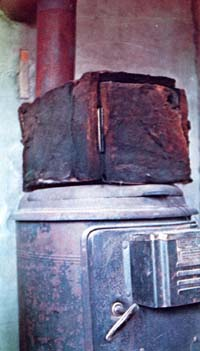

When we first moved to our ranch out here in Now Mexico, we were so poor that we couldn't even afford a stove with an oven. Oh, we had a stove all right ... a good old upright, wood-burning model. And, with a roaring fire inside, its top was fine for frying and great for boiling ... anything that could be fried or boiled. But for baking breed, the Ashley was zilch. And after more than a year of nothing but skillet-broad, I finally got smart.
"After all," I asked myself one day, "what is an oven anyway but an insulated container in which air can be heated?"
"Why, nothing." I answered. "in fact, if you take away such technological frills as automatic buzzers, built-in thermometers, and self-cleaning cycles . . . that's all that it is!"
Once I found that I agreed on the matter, the rest was easy. So easy that, an hour later, I'd already built and was ready to test our now oven. Not a very fancy one, to be sure ... but an oven nevertheless. And what it lacks in "pretty", it more than makes up in economy (since about the only money I spent while fabricating our admittedly homely "baking box" was for the few cents' worth of gasoline I used while scrounging up the little beauty's materials).
The oven's body is a five-gallon shortening can, which we picked up free at a friendly hamburger stand. I sawed off one end of the container with a hacksaw, then reattached it with a couple of spring hinges and a few sheet metal screws. Voila! The spring-loaded hinges always close the door automatically ... thereby eliminating the need for even the simplest latch.
I next drove over to the county dump and, after just a few minutes of scrounging, found exactly what I needed to insulate the bake box: a large sheet of one-inch-thick fiberglass, complete with fail facing land absolutely free for the taking).
Within minutes of my arrival back home, I had cut the insulation to fit around the top and sides (but not the bottom!) of the can (my only tool: scissors) and secured the fiberglass in place (foil side in) with a few odd pieces of wire that I had around the place. We were ready for some homebaked bread!
The oven is "turned on" merely by setting it on top of our old Ashley space heater at any time the stove contains a live fire. And does that insulated box ever heat up! We burned a lot of bread in it until we learned to keep the blaze low in the Ashley and to slip large enough metal supports in under the container to keep its bottom raised about a half-inch above the stove's top. Now, with a little careful watching (about the same amount that the oven on any wood-burner requires), we can turn out perfect baked goods nearly every time.
We use the little homemade oven the heaviest during the winter . . when we have our strongest hankerin' for heavier victuals, and when the ole Ashley is fired up anyway. (We just lean back and warm our toes and bake biscuits at the same time.)
Folks who drop by generally like the elegantly rustic simplicity of our do-it- yourself bake box. And we like the fact that, after a solid year of almost ai y use, we haven't had the first piece of chrome fall off the "appliance" . . . nor has a single thyristor circuit shorted out in any of its temperature minder controls (us)!
|
 |
|
|